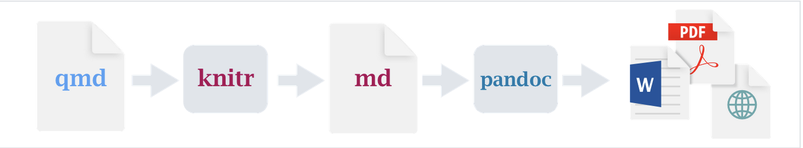
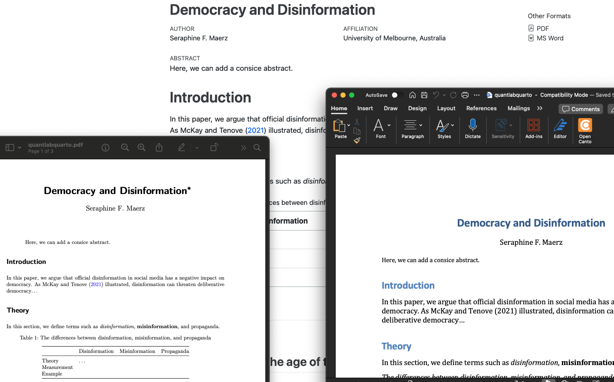

---
title: "Democracy and Disinformation"
author:
- name: Seraphine F. Maerz
affiliations:
- University of Melbourne, Australia
format:
pdf:
pdf-engine: pdflatex
colorlinks: true
link-citations: true
header-includes:
- \usepackage{float}
- \floatplacement{table}{H}
html: default
docx: default
prefer-html: true
bibliography: references.bib
thanks: "Please do not circulate."
abstract: "Here, we can add an informative and concise abstract."
keywords: "List some keywords here."
---How to use R Studio with Quarto to write nice papers ready for submission in whatever format
This is a short and fun tutorial on how to create beautiful Quarto documents that effectively combine code, analysis, and narrative. No previous knowledge required. The tutorial covers only the very basics to get started with writing nice papers using Quarto. For further tutorials, hints, and tips, see for example here.

As a researcher, I love collaborative paper writing processes with efficient workflows. Quarto is the next-generation version of R Markdown from Posit and is really a great tool for this. Follow the four steps below to get started with your own first Quarto paper.
1 Install R and R Studio
Install R and R Studio on your laptop. All recent version of R Studio come along with Quarto already being included.
2 Create an R project for your paper
In R Studio go to,
File > New Project > New Directory
Scroll down and choose
Quarto ProjectGive your project a directory name, pick a location on your laptop.

3 Start writing your paper in the file with the ending .qmd
3.1 Configuring the YAML header
In this header, you tell Quarto how to Render your paper in the formats pdf, docx, and html. A lot can be added to this YAML header (see here, for example), I recommend you the following minimal set up to get started:
Give your paper a title, add your name, affiliation, etc. Before you can get started with the actual writing of your paper, two more things you need to do:
Add a
.bib fileto your project folder and call it references.bib. For more information about .bib files and how you get the papers and books you want to cite in bibtex format from Mendeley, Zotero, etc., see [here](https://bibtex.eu/quarto/).Install
tinytexvia the Terminal (bottom left in R Studio) for pdf compilation with the following command line:Quarto install tinytex.
3.2 Writing text
Just below the header (end of it is marked with ---) you can now start with the text of your paper. Formatting in Quarto documents is simple and very similar to Markdown. For example, you can start with your first header by writing # Introduction. If you prefer to write in a similar environment as .docx, click on Visual in the top left corner. In the Visual mode, formatting and inserting images or tables is straightforward and similar to .docx.
3.3 Citing others and adding a list of references
Citing others is easy as soon as you have these resources saved in your .bib file (see above). Simply write @ in front of the .bib citation key, e.g., @Maerz2023. The list of references is automatically added to the end of your paper.
3.4 Adding a plot created in R
You can add an R code snippet creating a plot or other figures and also reference it in the text with @fig-name. Here is a simple example to get started:
```{r}
#| label: fig-name
#| echo: FALSE
#| warning: FALSE
#| message: FALSE
#| fig-cap: "Our nice plot"
# with #| you tell Quarto how to deal with your plot
# For example, use the V-Dem dataset, offering 500 indicators on democracy
# more info about the dataset: https://www.v-dem.net/
# load the dataset via the R package vdemdata on the vdeminstitute github
# install devtools package, then use this command:
# devtools::install_github("vdeminstitute/vdemdata")
# load packages
library(vdemdata)
library(tidyverse)
library(modelsummary)
# prepare data (check out the V-Dem Codebook for more info about variables)
vdem <- vdemdata::vdem %>%
filter(v2x_regime > 1) %>% # this variable goes from 0-3, all countries above 1 are democracies
select(country_name, year, v2x_polyarchy, v2smgovdom, v2smgovab, e_gdppc, v2x_regime) %>% # democracy, disinformation variables, GDP per capita, regime type
mutate(Democracy = v2x_polyarchy, # rename variables
Disinformation = pmax(v2smgovdom, v2smgovab), # construct new variables by maximum values per obs.
Disinformation = 0-Disinformation) %>% # flip variables
drop_na()
# do some simple plot
ggplot(vdem, aes(x = Disinformation, y = Democracy)) +
geom_point() +
theme_minimal()
```3.5 Adding a results table from estimations in R
You can add an R code snippet showing a results table summarizing your analysis and also reference it in the text with @tbl-results. Here is an example to get started:
```{r}
#| label: tbl-results
#| echo: FALSE
#| warning: FALSE
#| message: FALSE
#| tbl-cap: "Results table"
# with #| you tell Quarto how to deal with your table
# For example, use the V-Dem dataset, offering 500 indicators on democracy
# more info about the dataset: https://www.v-dem.net/
# load the dataset via the R package vdemdata on the vdeminstitute github
# install devtools package, then use this command:
# devtools::install_github("vdeminstitute/vdemdata")
# load packages
library(vdemdata)
library(tidyverse)
library(modelsummary)
# prepare data (check out the V-Dem Codebook for more info about variables)
vdem <- vdemdata::vdem %>%
filter(v2x_regime > 1) %>% # this variable goes from 0-3, all countries above 1 are democracies
select(country_name, year, v2x_polyarchy, v2smgovdom, v2smgovab, e_gdppc, v2x_regime) %>% # democracy, disinformation variables, GDP per capita, regime type
mutate(Democracy = v2x_polyarchy, # rename variables
Disinformation = pmax(v2smgovdom, v2smgovab), # construct new variables by maximum values per obs.
Disinformation = 0-Disinformation) %>% # flip variables
drop_na()
# do some simple OLS
m1 <- lm(Democracy ~ Disinformation + v2x_regime + e_gdppc, data = vdem) # DV: Democracy, IV: Disinformation, plus controls: GDP per capita, regime type
modelsummary(m1, estimate = "{estimate}{stars}") # for getting a nice table with stars
```4 Click Render and enjoy your nice paper in pdf, .docx, or html
After these four basic steps, you might like to adjust your paper further. For example, you can add a .csl file to your folder and add it to the YAML header to automatically get journal-specific formatting and citation styles for your paper. You can also format your pdf file differently than your .docx (yes, some journals still accept only .docx files in old-fashioned formatting, don’t ask me why). Quarto has a lot to offer for us academics and clicking Render and looking at your nice paper is fun!
